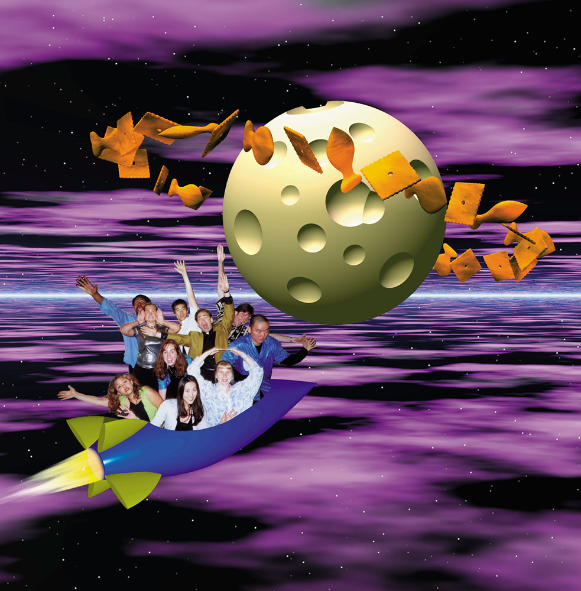

World Made of Cheese (2000)
This image was the cover art for the Artists in Resonance album of the same name. The inspiration came from the amazing Jennifer Chang, who grew tired of singing Flashdance... What a Feeling and altered the opening lyrics during rehearsal one day. "In a world made of steel, made of... CHEESE!" The photo for this image was taken just after performing in the first round of the International Championship of Collegiate A Cappella (ICCA). We were pretty psyched, and went on to make it to the semi-final round in our region that year. The pictured members are (crouching in front, left to right) Jackie Treu, Sara Mackie, Judy Ho (Gavazza), and Sarah Aldinger, and (standing, left to right), Rufus Jones, Jen Alexander (Kiefer), Terry Lee, Joel Slotkin, yours truly, and Robin Lee. I cannot begin to say how amazing it was to sing with this fine group of performers!
This image was created with a host of tools: Ray Dream Designer 3D for the rocket, cheese-its and goldfish, POV Ray for the swiss-cheese ball, Bryce 3D for the sky, and Photoshop for the compositing. One of the more amusing tidbits from this project was that my right and and Robin's left hand were outside the margin of the photo and therefore missing. I had to fashion hands for us using ones copied from Joel's right and Terry's left, respectively. It's pretty obvious to me, but I don't know if anyone else would ever notice. Did you?
© W. Rhett Davis 2000